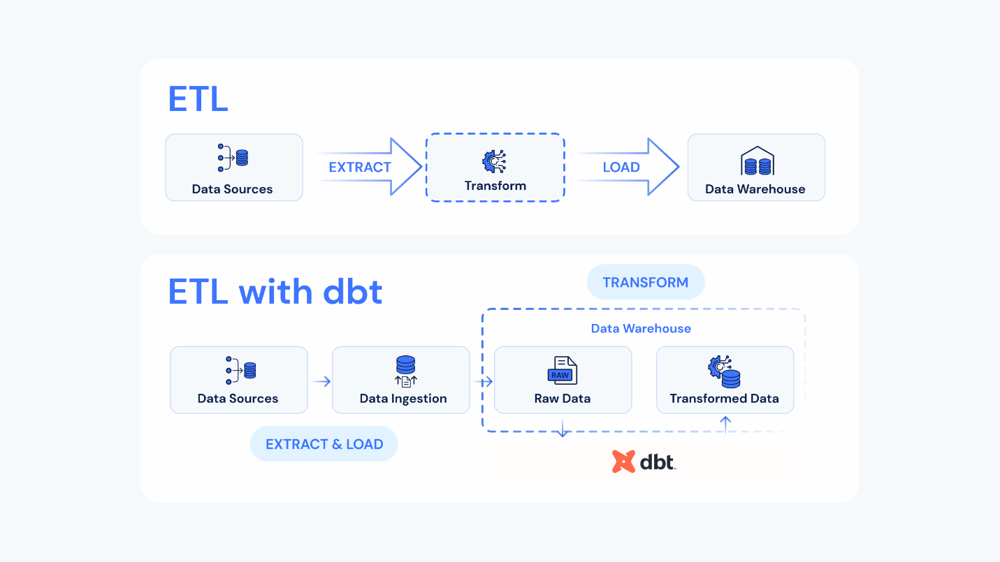
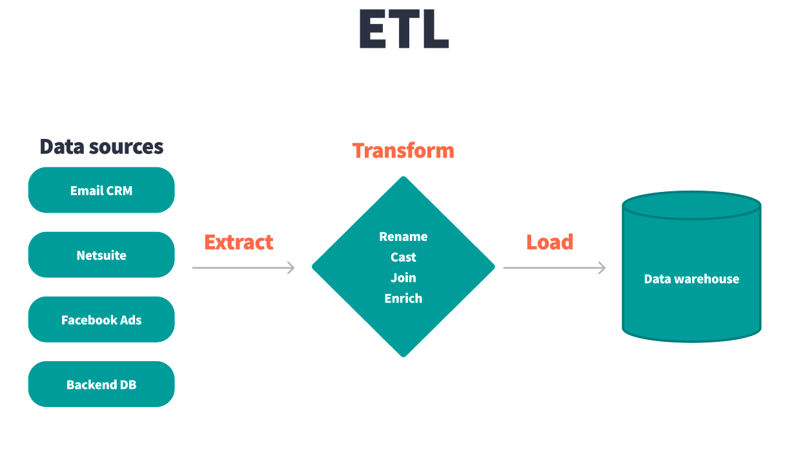
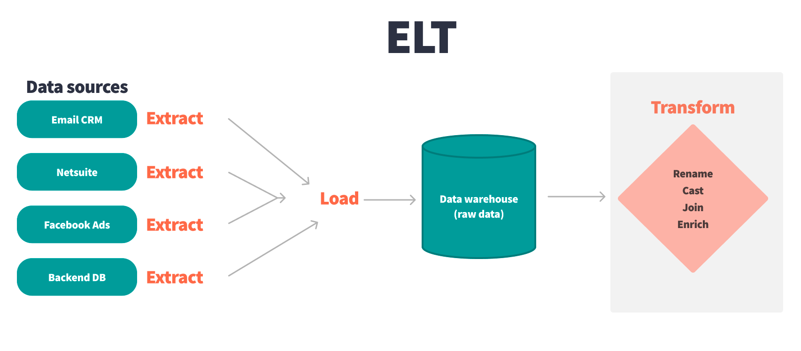

Every data pipeline has the same three primitives: get the data out of the source (Extract), reshape it into something analysts can use (Transform), and write it somewhere queryable (Load). What changes is the order.
Pull raw data out of source systems, run it through a transformation engine on a separate machine (an ETL tool, a Spark cluster, a Python job), then load only the cleaned, modeled data into the warehouse.

Source → [Transform on a separate box] → Warehouse
ETL was the dominant pattern from the 1980s through the early 2010s, when warehouse compute was expensive and disk was scarce. You did the heavy lifting before the warehouse so the warehouse only stored what you needed.
Pull raw data out of source systems, dump it into the warehouse as-is, then transform it in place using SQL.

Source → Warehouse (raw) → Warehouse (transformed)
This is what cloud warehouses like Snowflake, BigQuery, Redshift, Databricks, and DuckDB are built for. dbt is the “T” in ELT.
| Reason | What changed |
|---|---|
| Cost | Cloud warehouse compute is cheap and elastic. Running a transform inside the warehouse is often cheaper than maintaining a separate Spark cluster or ETL tool. |
| Scalability | Modern warehouses scale storage and compute independently and on demand. You can transform a billion-row table without provisioning anything. |
| Flexibility | Raw data is preserved in the warehouse, so you can re-transform it whenever business logic changes — no need to re-extract from the source. |
| Time-to-insight | Loading raw first means analysts can poke at the data immediately, even before the modeled tables are built. |
| Governance | Raw data sticks around in a known place. Auditing, lineage, and compliance reviews all happen in one system instead of being scattered across an ETL tool, a Spark job, and the warehouse. |
dbt does not extract data and it does not load data. It only does the “T” — and it does it as SQL that runs inside your warehouse. You write SELECT statements, dbt wraps them in the right DDL (CREATE TABLE, CREATE VIEW, MERGE) and runs them in the correct dependency order.
Tools you might use for the E and L: Fivetran, Airbyte, Stitch, Meltano, custom Python jobs. Tools for the T: dbt (this course), or hand-rolled SQL scripts (which is what dbt replaces).
Press n when you’re ready for the next lesson.